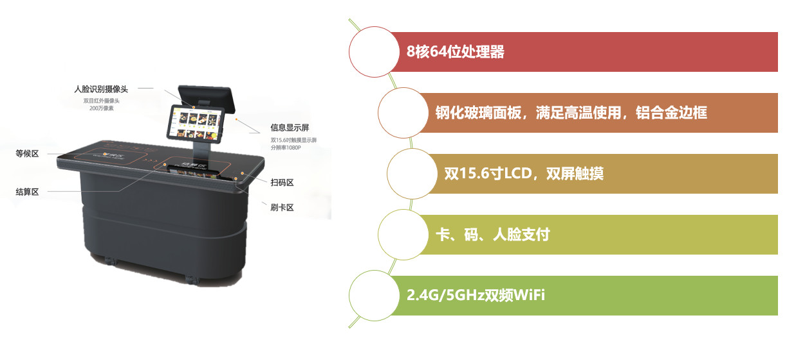

放上即完成结算。
将内置RFID的餐具放在结算台上，即可瞬间自动识别全部菜品和金额。
全球食堂广泛采用，稳定·高速·高精度的结算方式。
一次读取30个以上
1秒内完成结算
全球食堂广泛应用

RFID结算的工作原理
餐具内置的RFID芯片由结算台读取器瞬间读取，简单可靠的结算方式。
1
使用RFID内置餐具选取菜品
每个餐具内置有RFID芯片。只需选择喜欢的菜品放入托盘即可。无需特殊操作。
2
放上结算台即可全部自动识别
将托盘放上结算台，内置读取器在1秒内批量读取所有餐具的RFID芯片。品目和金额显示在屏幕上。
3
人脸识别 / QR / IC卡支付
通过人脸识别、QR码、IC卡等方式进行无现金支付。顺畅完成结算。
💡 RFID芯片工作原理：嵌入餐具底部的RFID芯片预先写入了菜单信息（品目·价格）。结算台内置的高频读取器通过电磁波激活芯片，无需电池即可读取信息。由此可在1秒内同时准确识别30个以上的餐具。
RFID结算台
高速·稳定·高精度。全球食堂广泛采用的RFID智能结算台。

RFID智能结算台
搭载双15.6英寸 1080P触控屏
- 一次在1秒内读取30个以上餐具
- IC卡 / QR码 / 人脸识别支付
- 语音·光引导（真人语音）
- WiFi / TCP/IP（Ethernet）通信
- 最适合小碗式·套餐式食堂
- 可在屏幕上添加·删除订单
芯片方式：高精度·稳定·高速计算
关于RFID餐具
兼具可反复使用的耐久性和可自由改写菜单的灵活性的专用餐具。
高耐久性
RFID餐具支持洗碗机清洗，可反复使用。芯片密封于餐具底部，防水抗冲击设计。可长期稳定使用。
智能出品机写入
使用智能出品机将菜单信息（品目·价格）写入餐具芯片。可为每餐设置不同菜单·价格，同一餐具可对应早·午·晚不同菜单。
批量一括写入
支持对多个餐具批量写入菜单信息。短时间内即可准备大量餐具，大幅提升食堂运营效率。
主要特点
高速·高精度
一次在1秒内读取30个以上餐具。识别精度99%以上，实现稳定结算。
稳定的全球实绩
全球各大学、企业、医院食堂广泛采用。多年运营经验验证的高可靠性系统。
管理平台
通过网页统一管理菜品管理、食堂信息管理、订单明细、销售分析。支持数据驱动的食堂运营。
自动识别·自动结算
放上餐具即自动显示品目和金额。无需工作人员操作，实现结算省力化。
多样化支付
支持人脸识别、QR码、IC卡。提供适合用户需求的灵活支付方式。
订单修改功能
结算前可在屏幕上添加·删除菜品。确保准确结算，提升用户安心感。
技术规格
| 项目 | 规格 |
|---|---|
| CPU | 64位8核CPU |
| 存储 | 16G FLASH, 2G DDR3 |
| 显示屏 | 双15.6英寸 1080P触控屏 |
| QR扫描 | QR Code, Code 128/39等，360°旋转 |
| 人脸识别摄像头 | 双红外摄像头，200万像素 |
| RFID读取 | 一次30个以上，读取时间1秒内 |
| 非接触式卡 | M1/CPU卡，ISO/IEC14443兼容 |
| 通信 | Ethernet 10/100Mbps, WiFi 2.4GHz, Bluetooth 4.0 |
| 语音引导 | 真人语音引导 |
| 外形尺寸 | 1475×650×1100mm（台式） |